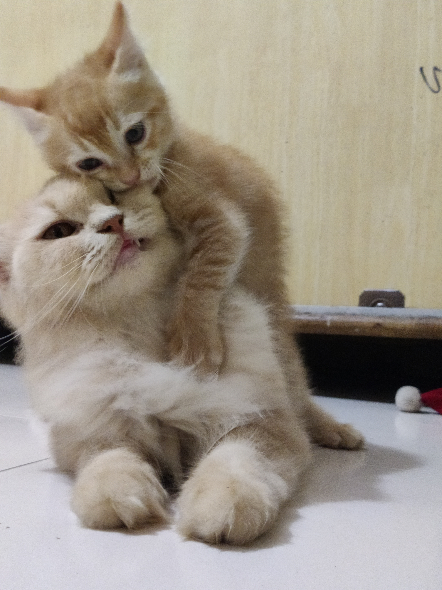

About
Hi, I am Paulson.
so first lets talk about my carrier till my high school I had never ever thought about my future,
my goals, my ambition. basically i was struggling to decide my further studies. at this point COVID pandamic also started and I
was stucked in my native and unfortunatly i Choose to BCA (bachelor in computer application) and after also i was not serious...
and because of I am from NON-IT background i had zero basic knowledge and finally after completing my Degree I am Working on my skils
under JAVA Programing. Now my HTML and CSS skills are improving and Getting to know some function's and program from C language.
That sparked an interest in programming for me.
Now, a few things about myself.
I love pets specially dogs,nature and learning new skills.
I have a cat, Molly and her daughter micky. she is a persian breed. I am still human so I still like activies like spending some time with some homies.
My favourite activity would probably be going to gym and hit some workout.